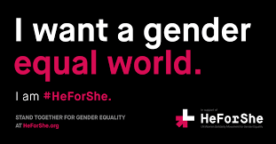
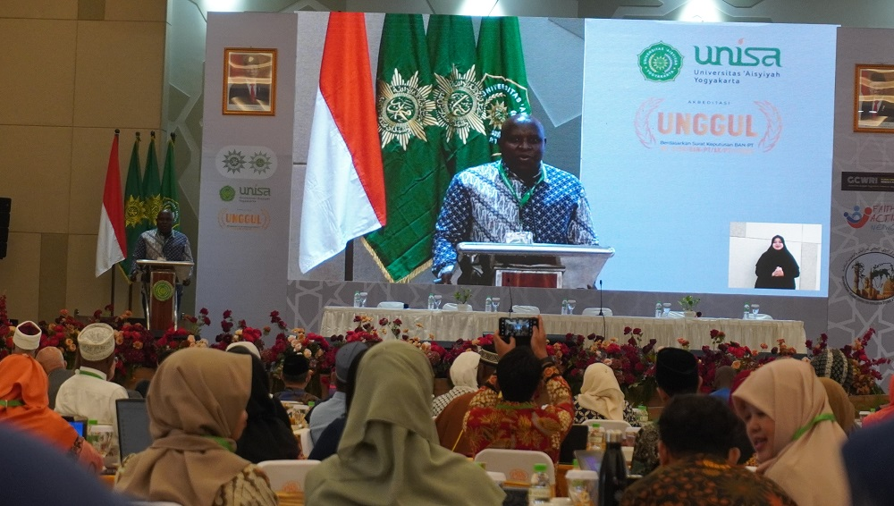
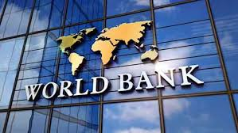

  
Di tingkat multilateral, Indonesia aktif bekerja sama dengan UN Women, khususnya dalam program “HeForShe,” yang mengajak laki-laki untuk mendukung kesetaraan gender. Program ini diterapkan di berbagai wilayah Indonesia untuk meningkatkan kesadaran akan pentingnya peran laki-laki dalam menciptakan kesetaraan.
Indonesia juga menjadi anggota aktif di Komisi Status Perempuan PBB (CSW). Dalam forum ini, Indonesia berbagi praktik terbaik dan melaporkan kemajuan terkait kesetaraan gender, seperti peningkatan representasi perempuan dalam politik dan penghapusan kekerasan berbasis gender.
Kerjasama dengan World Bank dalam program “Empowering Indonesian Women for Poverty Reduction (Mekaar)” juga menjadi langkah konkret. Program ini mendukung akses perempuan terhadap pembiayaan dan pelatihan kewirausahaan, sehingga dapat meningkatkan taraf hidup mereka secara berkelanjutan.